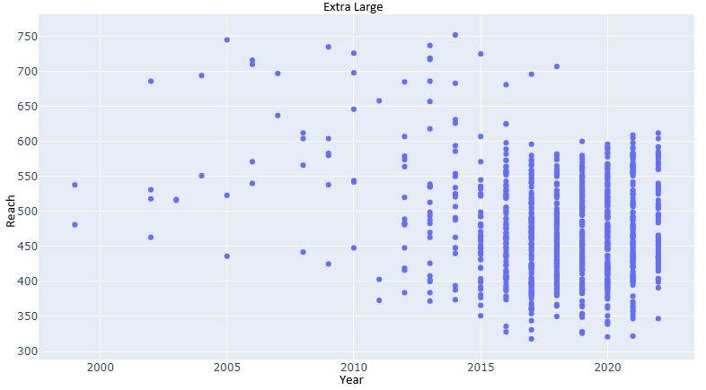
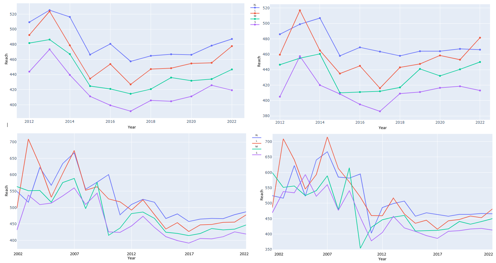

Chart depicting distribution of sizes within dataset. Sizes XXS, XS, ML, and XXL were omitted from final analysis due to lack of datapoints.
Chart depicting distribution of years within dataset. Bikes manufactured before the year 2002 were omitted from final analysis due to lack of datapoints
Chart depicting distribution of reach measurements for entire dataset.
Chart depicting distribution of reach measurements for only sizes S, M, L, and XL
Chart depicting distribution of reach measurements for size S.
Chart depicting distribution of reach measurements for size M.
Chart depicting distribution of reach measurements for size L.

Chart depicting distribution of reach measurements for size XL.

Chart depicting final analysis. The left two charts depict the mean of the reach measurements for S, M, L, and XL. The right two charts depict the median measurements. The top two charts depict a shorter time period in more detail.
It is common knowledge in the bike industry that reach measurements have been lengthening over the past decade. these charts appear to depict that that common knowledge is not entirely accurate. it appears that reach mesumrents shrank from 2002 to 2017, then started to grow again.